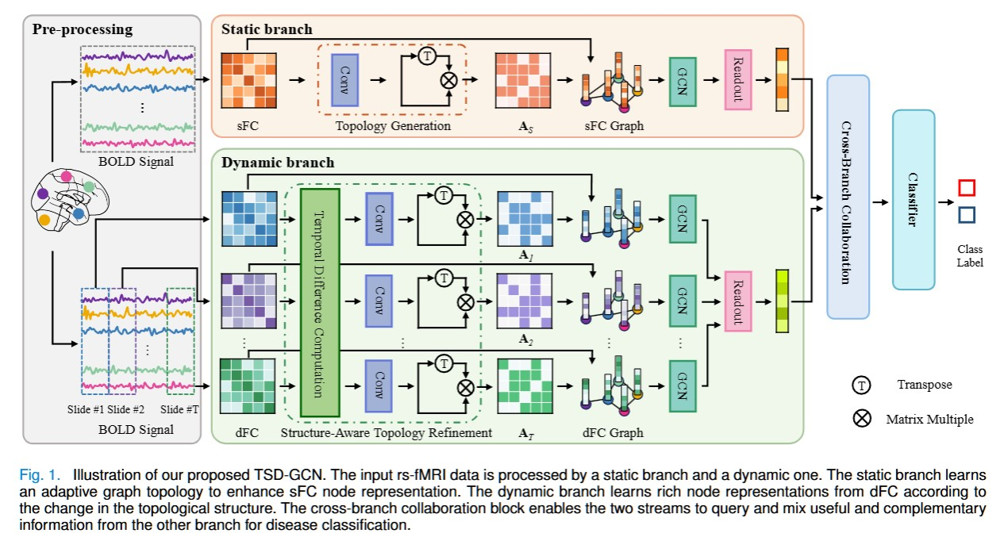
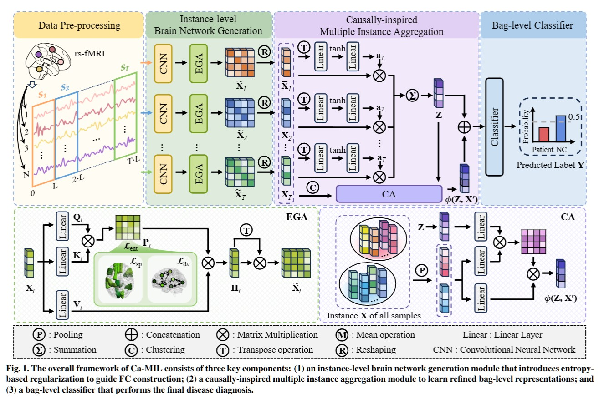
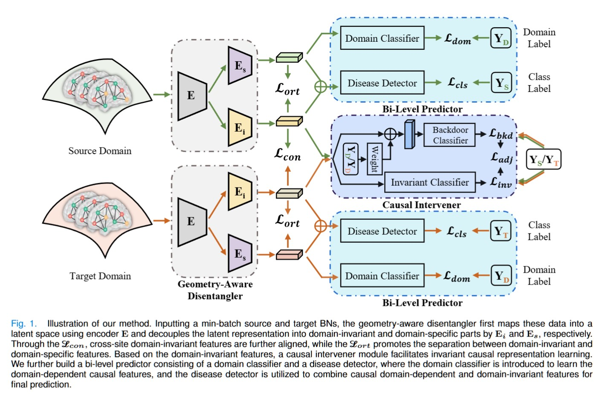
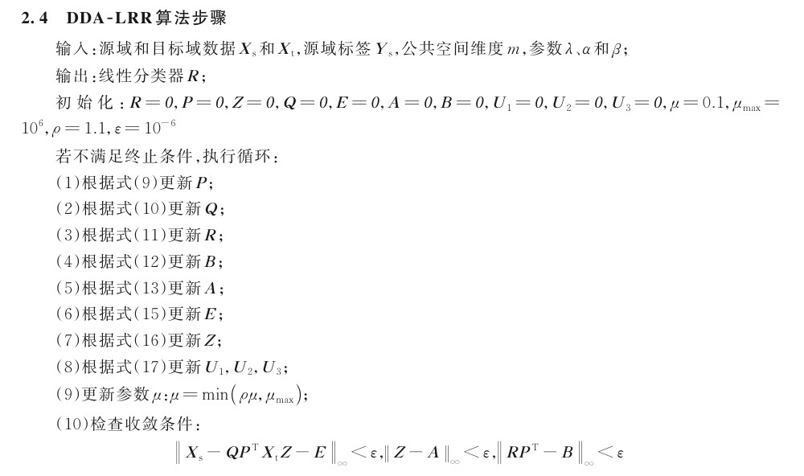

Graph Learning
TSD-GCN
A topology-learnable static–dynamic graph convolutional network that captures complementary functional-connectivity patterns for brain disorder detection.
Research
I am a third-year graduate student working on intelligent diagnosis of brain disorders with resting-state functional MRI. My research explores brain network modeling and representation learning, with a focus on cross-site generalization, static–dynamic graph learning, and causal representations of brain dynamics.

Graph Learning
A topology-learnable static–dynamic graph convolutional network that captures complementary functional-connectivity patterns for brain disorder detection.

Causal Learning
A multi-instance causal representation framework that models temporal variations in brain dynamics and improves disease classification from rs-fMRI.

Cross-Site Learning
A geometry-aware causal representation learning framework that preserves brain-network geometry on Riemannian manifolds and learns both domain-invariant and domain-dependent causal representations.

Domain Adaptation
A discriminative domain adaptation method that uses low-rank representation, orthogonal reconstruction, and source-domain supervision for multi-site autism spectrum disorder identification.
Second author · IEEE Transactions on Neural Systems and Rehabilitation Engineering
First author · Journal of Data Acquisition and Processing, 38(4), 886–897
Second author · Minor revision at Medical Image Analysis
M.Sc. in Computer Science
NUIST · 2024–2027 (expected)
GPA: 4.15/5 · Top 4%
B.Eng.
NUIST · 2020–2024